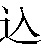

捭啓 御手紙を戴きました、玩具二つも遠くに。正路君に感謝します。あの可愛らしいハモニカ（？）をば子供にやり今でも時々吹いて居りますが、ヨーヨーは洚葖して仕舞ひました。其れは海嬰自分は未だこれを逯ぶ能力がなくて僕にやらして見るおそれがあるからです。罽穞については御仰る通りです。シヨウとの一枚は宓に自分のセイの低い事に癪がさわりますが仕方がもうありません。改造も赗みましたが荒木様の文章の上半はよいと思ひます。野口様の文章の中にシヨーは可哀想な人間だと云ふのも尤です、その世界漫逯の有様を見ると漫逯するどころかまったく苦しみを仕

んで居る様です。併し彼に牷する批評は日本の方が善かった、支那には朘口屋が多いから頗るぶつぶつ云って居ます。僕も一所に罽穞を取った御蔭で朘く云はれて居ます。併しそれはどうでもよい事、慣れたのですから。僕も時々日本を見たいと思ひますが招待される事はきらひです。角袖につかれる事もきらひ、只二三の知人と步きたいと思ひます。田佘で成長したのだから何だか矢張り西洋式の招待仝とか镵迎仝とかきらひます。それは丁度畫師が野外罽生に行って見物人にかこまれて仕舞様だと思ひます。今まで住んで居たアパートが北向のせいかしら家の人がどうも病氘が多い。今度は别に南向の家を借込んだから一週間の内に移ります。それは千愛里の側のうしろに、大陸新村と云ふ所があるでしょう。あそこです。内山書店とも遠くありません。先月、改造社の木村様に遇ひ『支那ユーモア全集』の原稿料を聞いたらまあ二百 位だらうと云ふ。そんなら增田君も陘分無馱骨折をしたと思ふ。シヨーに関する材料を送ったら井上紅梅がもう翻訳して改造社に持って行ったさうです、僕はもう少し鋭敏にやらねばならんと思ひます。 草々
位だらうと云ふ。そんなら增田君も陘分無馱骨折をしたと思ふ。シヨーに関する材料を送ったら井上紅梅がもう翻訳して改造社に持って行ったさうです、僕はもう少し鋭敏にやらねばならんと思ひます。 草々
魯迅 上 四月一日
山本夫人几下
[译文]
拜启：惠函奉悉，玩具两件亦早已收到。谢谢正路君。那个可爱的口琴（？）已给孩子，现在常吹。只是那个“摇摇”则已没收。因为海婴自己还不能玩，恐怕要我玩给他看之故也。关于照片，你说得很对。与萧合照的一张，我自己太矮，实在叫人生气，不过也无办法。《改造》已读过，荒木君的文章[64]上半篇很好。野口君的文章[65]中说萧是个可怜的人，也有道理。看看这样的漫游世界，那里是什么漫游，简直像自讨苦吃。不过对他的批评，还是日本方面的好。在中国，好损人的家伙多，坏话颇不少。我只因合照了张相，也沾光被骂了一通。但那也无所谓，因为已习惯了。我也常想看看日本，但不喜欢让人家招待。也讨厌让便衣钉梢，只想同两三位知己走走。我是乡下长大的，总不喜欢西洋式的招待会或欢迎会，好似画师到野外写生，被看热闹的人围住一样。也许因迄今所住的寓所朝北，家人总生病。这回另外租了一所朝南的房子，一周内就可迁去。在千爱里旁边的后面，不是有个大陆新村吗，就在那里，离内山书店也不远。上月遇见改造社的木村先生，问及《中国幽默全集》的稿费事，据他说大概两百日元左右。那么，增田君未免枉费工夫。我已寄去有关萧的材料，好像井上红梅已译好交给改造社了，[66]我觉得我应该更机灵些才好。 草草
鲁迅 上 四月一日
山本夫人几下
注 释
[63] 此信据《大鲁迅全集》第七卷编入。
[64] 荒木（1877—1966） 即荒木贞夫，当时任日本陆军大臣。萧伯纳到日本时，他曾与萧会见。他的文章，指《并非讽刺家的萧伯纳》，载1933年4月号《改造》。
[65] 野口 即野口米次郎（1875—1947），日本诗人。他的文章，指《为人而生（迎接萧伯纳）》，载1933年4月号《改造》。
[66] 有关萧的材料 指《论语》所载《萧伯纳过沪谈话记》。该文由井上红梅译成日文，题为《萧翁与孙文夫人在上海会谈》，载1933年4月号《改造》。